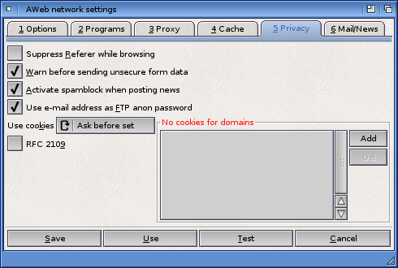

Network settings: Privacy

Suppress Referer while browsing
(Previously called "Browse anonymously")
Normally, if you follow a hyperlink, AWeb sends the address of the page that link appeared on to the server (the "Referer"). This allows servers to generate lists of back-links for interest, logging, optimized caching, tracing obsolete or mistyped links, etc. Some servers, like chat servers, actually need this information to let you get the page.
Because the source of a link may be private information, or may reveal an otherwise private information source, AWeb allows you to disable this feature. If the checkbox is selected, AWeb doesn't send this address.
If this checkbox is checked, a warning requester is given every time you have submitted a form over an unsecure connection.
Spammers (senders of unsolicited commercial e-mail) often scan all articles in newsgroups for e-mail addresses. If you check this checkbox, the articles you post will contain modified addresses to protect you against this practice.
FTP servers usually require a userid and password to obtain access. Most links to FTP sites don't contain this details because most FTP sites can be accessed via anonymous FTP. By convention, the word "anonymous" is used as userid, and your e-mail address is used as the password in this case.
If you check this option, and you have configured your e-mail address, it is sent as password for anonymous FTP. Otherwise the string "anonymous@anonymous" is used.
Use this chooser to select the protection level against privacy violation by cookies.
The RFC 2109 standard for cookies provides a better privacy protection than the original NetScape cookie mechanism. Unfortunately, not all servers are compatible with the new standard. Uncheck this checkbox to turn the new mechanism off, in case you have problems with a specific site.
If this list contains full or partial domain names, then AWeb will never remember or save cookies set by these domains, and never send cookies to these domains. The domain name is checked against the domain as it is defined in the cookie definition.
Use the Add button to add a new entry, and the Del button to delete the currently selected entry. Double-click on an entry to edit the name in place.
You can also add a domain in this list by clicking the Never button in the cookie alert requester.
 Cache
Cache  Settings requesters
Settings requesters  Mail/News
Mail/News